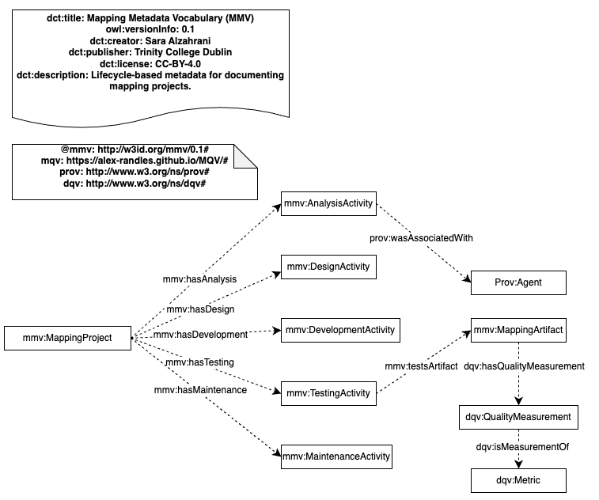

The Mapping Metadata Vocabulary
Release: 2025-11-01
- This version:
- http://w3id.org/mmv/0.1
- Latest version:
- http://w3id.org/mmv/
- Revision:
- 0.1
- Issued on:
- 2025-11-12
- Authors:
- Sarah Alzahrani
- Publisher:
- "Trinity College Dublin"
- Imported Ontologies:
- prov-o#
- Download serialization:


- License:

- Visualization:

- Cite as:
- Sarah Alzahrani. The Mapping Metadata Vocabulary. Revision: 0.1. Retrieved from: http://w3id.org/mmv/0.1
Abstract
The Mapping Metadata Vocabulary (MMV) is an ontology for describing the lifecycle context of declarative mapping projects used to generate knowledge graphs and Linked Data. It models key phases of the mapping lifecycle: analysis, design, development, testing, and maintenance and links mapping activities, artefacts, and responsible agents. MMV complements existing provenance and quality vocabularies by enabling structured documentation and improved reuse of mapping artefactsIntroduction back to ToC
The Mapping Metadata Vocabulary (MMV) was developed to address a common gap in the documentation and reuse of declarative mapping definitions used to generate knowledge graphs and Linked Data. While existing vocabularies such as PROV-O, DQV, and MQV provide foundations for expressing provenance, data quality, and mapping quality, there is no dedicated model that captures the full lifecycle context of mapping projects, how mappings are planned, designed, developed, tested, validated, and maintained over time. MMV introduces a lifecycle-oriented structure that models five key phases: Analysis, Design, Development, Testing, and Maintenance. Each phase contains activity classes and associated metadata fields that describe assumptions, motivations, decisions, tools used, requirements, risks, validation results, and other contextual factors influencing the mapping process. By providing explicit links between a Mapping Project, its Mapping Activities, and the resulting Mapping Artifacts, MMV enables richer documentation and traceability of mapping workflows. This is particularly important for complex data integration scenarios, collaborative environments, and long-term maintenance of mapping specifications.Ontology Diagram
This diagram shows the core structure of the Mapping Metadata Vocabulary (MMV).

Namespace declarations
| bibo | <http://purl.1122org/ontology/bibo/> |
| cube | <http://purl.org/linked-data/cube#> |
| daq | <http://purl.org/eis/vocab/daq#> |
| dcterms | <http://purl.org/dc/terms/> |
| dqv | <http://www.w3.org/ns/dqv#> |
| duv | <http://www.w3.org/ns/duv#> |
| foaf | <http://xmlns.com/foaf/0.1/> |
| mmv | <http://w3id.org/mmv/> |
| mmv1 | <http://w3id.org/mmv/#> |
| mqv | <https://alex-randles.github.io/MQV/#> |
| ns | <http://www.w3.org/ns/> |
| oa | <http://www.w3.org/ns/oa#> |
| owl | <http://www.w3.org/2002/07/owl#> |
| prov | <http://www.w3.org/ns/prov#> |
| rdf | <http://www.w3.org/1999/02/22-rdf-syntax-ns#> |
| rdfg-1 | <http://www.w3.org/2004/03/trix/rdfg-1/> |
| rdfs | <http://www.w3.org/2000/01/rdf-schema#> |
| skos | <http://www.w3.org/2004/02/skos/core#> |
| vann | <http://purl.org/vocab/vann/> |
| voaf | <http://purl.org/vocommons/voaf#> |
| w3id | <http://w3id.org/> |
| xml | <http://www.w3.org/XML/1998/namespace> |
| xsd | <http://www.w3.org/2001/XMLSchema#> |
The Mapping Metadata Vocabulary: Overview back to ToC
This ontology has the following classes and properties.Classes
- AnalysisActivity
- Category
- Category
- DataSet
- DesignActivity
- DevelopmentActivity
- Dimension
- Dimension
- MaintenanceActivity
- Mapping Tool
- MappingArtifact
- MappingProject
- Metric
- Observation
- Quality Annotation
- Quality Certificate
- Quality Graph
- Quality Measurement
- Quality Measurement Dataset
- Quality Metadata
- Quality Policy
- QualityAssessment
- TestingActivity
- User Quality feedback
Object Properties
- computed on
- evaluatesArtifact
- has Dimension
- has Metric
- has Metric Type
- has quality annotation
- has quality measurement
- has quality metadata
- hasAnalysis
- hasDesign
- hasDevelopment
- hasMaintenance
- hasTesting
- in category
- in dimension
- is measurement of
- testsArtifact
- was Derived From
Data Properties
- expected data type
- hasAssumption
- hasBackground
- hasDescription
- hasDesignDecision
- hasJustification
- hasMappingAlgorithm
- hasMappingFormat
- hasPublisherName
- hasPurpose
- hasReleaseDate
- hasRequirement
- hasRiskOrIssue
- hasTestingResult
- hasTestingType
- mappingLanguage
- mappingType
- projectEndTime
- projectStartTime
- usesToolName
- value
- version
The Mapping Metadata Vocabulary: Description back to ToC
A lifecycle-based vocabulary for describing metadata, provenance, and quality of mapping projects and artifacts.Cross-reference for The Mapping Metadata Vocabulary classes, object properties and data properties back to ToC
This section provides details for each class and property defined by The Mapping Metadata Vocabulary.Classes
- AnalysisActivity
- Category
- Category
- DataSet
- DesignActivity
- DevelopmentActivity
- Dimension
- Dimension
- MaintenanceActivity
- Mapping Tool
- MappingArtifact
- MappingProject
- Metric
- Observation
- Quality Annotation
- Quality Certificate
- Quality Graph
- Quality Measurement
- Quality Measurement Dataset
- Quality Metadata
- Quality Policy
- QualityAssessment
- TestingActivity
- User Quality feedback
AnalysisActivityc back to ToC or Class ToC
IRI: http://w3id.org/mmv/#AnalysisActivity
- has super-classes
- Activity c
- is in domain of
- hasAssumption dp, hasPurpose dp, hasRequirement dp, hasRiskOrIssue dp
- is in range of
- hasAnalysis op
- has members
- Proj1 Analysis ni
Categoryc back to ToC or Class ToC
IRI: http://purl.org/eis/vocab/daq#Category
- is equivalent to
- Category c
Categoryc back to ToC or Class ToC
IRI: http://w3id.org/mmvCategory
- has super-classes
- Concept c
- is in range of
- in category op
DataSetc back to ToC or Class ToC
IRI: http://w3id.org/mmv/#DataSet
- has super-classes
- Entity c
- has members
- Wards C S V 2022 ni
DesignActivityc back to ToC or Class ToC
IRI: http://w3id.org/mmv/#DesignActivity
- has super-classes
- Activity c
- is in domain of
- hasDesignDecision dp, hasJustification dp
- is in range of
- hasDesign op
- has members
- Proj1 Design ni
DevelopmentActivityc back to ToC or Class ToC
IRI: http://w3id.org/mmv/#DevelopmentActivity
- has super-classes
- Activity c
- is in domain of
- hasMappingAlgorithm dp, hasMappingFormat dp, usesToolName dp
- is in range of
- hasDevelopment op
- has members
- Proj1 Dev ni
Dimensionc back to ToC or Class ToC
IRI: http://purl.org/eis/vocab/daq#Dimension
- is equivalent to
- Dimension c
Dimensionc back to ToC or Class ToC
IRI: http://w3id.org/mmvDimension
- has super-classes
- Concept c
- is in domain of
- in category op
- is in range of
- in dimension op
- has members
- Precision ni
MaintenanceActivityc back to ToC or Class ToC
IRI: http://w3id.org/mmv/#MaintenanceActivity
- has super-classes
- Activity c
- is in domain of
- hasPublisherName dp
- is in range of
- hasMaintenance op
- has members
- Proj1 Mint ni
Mapping Toolc back to ToC or Class ToC
IRI: https://alex-randles.github.io/MQV/#MappingTool
- has super-classes
- Entity c
- has members
- R M L Mapper ni
MappingArtifactc back to ToC or Class ToC
IRI: http://w3id.org/mmv/#MappingArtifact
- has super-classes
- Entity c
- is in domain of
- has quality measurement op, hasDescription dp, mapping Purpose ap, mappingLanguage dp, mappingType dp, version dp
- is in range of
- evaluatesArtifact op, testsArtifact op
- has members
- Map V2 ni, Map V3 ni
MappingProjectc back to ToC or Class ToC
IRI: http://w3id.org/mmv/#MappingProject
- has super-classes
- Entity c
- is in domain of
- hasAnalysis op, hasDesign op, hasDevelopment op, hasMaintenance op, hasTesting op, projectEndTime dp, projectStartTime dp
- has members
- Proj1 ni
Metricc back to ToC or Class ToC
IRI: http://www.w3.org/ns/dqv#Metric
- has super-classes
- is in range of
- has Metric op
Observationc back to ToC or Class ToC
IRI: http://purl.org/eis/vocab/daq#Observation
- is equivalent to
- Quality Measurement c
Quality Annotationc back to ToC or Class ToC
IRI: http://w3id.org/mmvQualityAnnotation
- is equivalent to
- motivation op value Quality assessment ni
- has super-classes
- Annotation c
- has sub-classes
- Quality Certificate c, User Quality feedback c
- is in range of
- has quality annotation op
Quality Certificatec back to ToC or Class ToC
IRI: http://w3id.org/mmvQualityCertificate
- has super-classes
- Quality Annotation c
Quality Graphc back to ToC or Class ToC
IRI: http://purl.org/eis/vocab/daq#QualityGraph
- is equivalent to
- Quality Measurement Dataset c
Quality Measurementc back to ToC or Class ToC
IRI: http://w3id.org/mmvQualityMeasurement
- has super-classes
- Observation c
- is in domain of
- computed on op, value dp
- is in range of
- has quality measurement op
- has members
- M1 ni
Quality Measurement Datasetc back to ToC or Class ToC
IRI: http://w3id.org/mmvQualityMeasurementDataset
- has super-classes
- Data Set c
Quality Metadatac back to ToC or Class ToC
IRI: http://w3id.org/mmvQualityMetadata
- has super-classes
- Graph c
- is in range of
- has quality metadata op
Quality Policyc back to ToC or Class ToC
IRI: http://w3id.org/mmvQualityPolicy
QualityAssessmentc back to ToC or Class ToC
IRI: http://w3id.org/mmv/#QualityAssessment
- has super-classes
- Activity c, Mapping Assessment c, TestingActivity c
- is in domain of
- evaluatesArtifact op, has Metric op, hasTestingType dp
- has members
- Proj1 Assess ni
TestingActivityc back to ToC or Class ToC
IRI: http://w3id.org/mmv/#TestingActivity
- has super-classes
- Activity c
- has sub-classes
- QualityAssessment c
- is in domain of
- hasTestingResult dp, hasTestingType dp, testsArtifact op
- is in range of
- hasTesting op
- has members
- Proj1 Test ni
User Quality feedbackc back to ToC or Class ToC
IRI: http://w3id.org/mmvUserQualityFeedback
- has super-classes
- Quality Annotation c, User Feedback c
Object Properties
- computed on
- evaluatesArtifact
- has Dimension
- has Metric
- has Metric Type
- has quality annotation
- has quality measurement
- has quality metadata
- hasAnalysis
- hasDesign
- hasDevelopment
- hasMaintenance
- hasTesting
- in category
- in dimension
- is measurement of
- testsArtifact
- was Derived From
computed onop back to ToC or Object Property ToC
IRI: http://w3id.org/mmvcomputedOn
- has domain
- Quality Measurement c
- has range
- Resource c
- is inverse of
- has quality measurement op
- is also defined as
- named individual
evaluatesArtifactop back to ToC or Object Property ToC
IRI: http://w3id.org/mmv/#evaluatesArtifact
- has super-properties
- used op
- has domain
- QualityAssessment c
- has range
- MappingArtifact c
has Dimensionop back to ToC or Object Property ToC
IRI: http://purl.org/eis/vocab/daq#hasDimension
- is inverse of
- in category op
has Metricop back to ToC or Object Property ToC
IRI: http://purl.org/eis/vocab/daq#hasMetric
- has domain
- QualityAssessment c
- has range
- Metric c
has Metric Typeop back to ToC or Object Property ToC
IRI: https://alex-randles.github.io/MQV/#hasMetricType
- has range
- Concept c
has quality annotationop back to ToC or Object Property ToC
IRI: http://w3id.org/mmvhasQualityAnnotation
- has super-properties
- has range
- Quality Annotation c
has quality measurementop back to ToC or Object Property ToC
IRI: http://w3id.org/mmvhasQualityMeasurement
- has domain
- MappingArtifact c
- has range
- Quality Measurement c
- is inverse of
- computed on op
has quality metadataop back to ToC or Object Property ToC
IRI: http://w3id.org/mmvhasQualityMetadata
- has range
- Quality Metadata c
hasAnalysisop back to ToC or Object Property ToC
IRI: http://w3id.org/mmv/#hasAnalysis
- has domain
- MappingProject c
- has range
- AnalysisActivity c
hasDesignop back to ToC or Object Property ToC
IRI: http://w3id.org/mmv/#hasDesign
- has domain
- MappingProject c
- has range
- DesignActivity c
hasDevelopmentop back to ToC or Object Property ToC
IRI: http://w3id.org/mmv/#hasDevelopment
- has domain
- MappingProject c
- has range
- DevelopmentActivity c
hasMaintenanceop back to ToC or Object Property ToC
IRI: http://w3id.org/mmv/#hasMaintenance
- has domain
- MappingProject c
- has range
- MaintenanceActivity c
hasTestingop back to ToC or Object Property ToC
IRI: http://w3id.org/mmv/#hasTesting
- has domain
- MappingProject c
- has range
- TestingActivity c
in categoryop back to ToC or Object Property ToC
IRI: http://w3id.org/mmvinCategory
- has domain
- Dimension c
- has range
- Category c
- is inverse of
- has Dimension op
in dimensionop back to ToC or Object Property ToC
IRI: http://w3id.org/mmvinDimension
- has range
- Dimension c
is measurement ofop back to ToC or Object Property ToC
IRI: http://w3id.org/mmvisMeasurementOf
- has domain
- Observation c
- is also defined as
- named individual
testsArtifactop back to ToC or Object Property ToC
IRI: http://w3id.org/mmv/#testsArtifact
- has super-properties
- used op
- has domain
- TestingActivity c
- has range
- MappingArtifact c
was Derived Fromop back to ToC or Object Property ToC
IRI: https://alex-randles.github.io/MQV/#wasDerivedFrom
Data Properties
- expected data type
- hasAssumption
- hasBackground
- hasDescription
- hasDesignDecision
- hasJustification
- hasMappingAlgorithm
- hasMappingFormat
- hasPublisherName
- hasPurpose
- hasReleaseDate
- hasRequirement
- hasRiskOrIssue
- hasTestingResult
- hasTestingType
- mappingLanguage
- mappingType
- projectEndTime
- projectStartTime
- usesToolName
- value
- version
expected data typedp back to ToC or Data Property ToC
IRI: http://w3id.org/mmvexpectedDataType
- has range
- any Simple Type
hasAssumptiondp back to ToC or Data Property ToC
IRI: http://w3id.org/mmv/#hasAssumption
- has domain
- AnalysisActivity c
- has range
- string
hasBackgrounddp back to ToC or Data Property ToC
IRI: http://w3id.org/mmvhasBackground
hasDescriptiondp back to ToC or Data Property ToC
IRI: http://w3id.org/mmv/#hasDescription
- has domain
- MappingArtifact c
- has range
- string
hasDesignDecisiondp back to ToC or Data Property ToC
IRI: http://w3id.org/mmvhasDesignDecision
- has domain
- DesignActivity c
- has range
- string
hasJustificationdp back to ToC or Data Property ToC
IRI: http://w3id.org/mmvhasJustification
- has domain
- DesignActivity c
- has range
- string
hasMappingAlgorithmdp back to ToC or Data Property ToC
IRI: http://w3id.org/mmvhasMappingAlgorithm
- has domain
- DevelopmentActivity c
- has range
- string
hasMappingFormatdp back to ToC or Data Property ToC
IRI: http://w3id.org/mmvhasMappingFormat
- has domain
- DevelopmentActivity c
- has range
- string
hasPublisherNamedp back to ToC or Data Property ToC
IRI: http://w3id.org/mmvhasPublisherName
- has domain
- MaintenanceActivity c
- has range
- string
hasPurposedp back to ToC or Data Property ToC
IRI: http://w3id.org/mmvhasPurpose
- has domain
- AnalysisActivity c
- has range
- string
hasReleaseDatedp back to ToC or Data Property ToC
IRI: http://w3id.org/mmvhasReleaseDate
hasRequirementdp back to ToC or Data Property ToC
IRI: http://w3id.org/mmv/#hasRequirement
- has domain
- AnalysisActivity c
- has range
- string
hasRiskOrIssuedp back to ToC or Data Property ToC
IRI: http://w3id.org/mmv/#hasRiskOrIssue
- has domain
- AnalysisActivity c
- has range
- string
hasTestingResultdp back to ToC or Data Property ToC
IRI: http://w3id.org/mmvhasTestingResult
- has domain
- TestingActivity c
- has range
- string
hasTestingTypedp back to ToC or Data Property ToC
IRI: http://w3id.org/mmvhasTestingType
- has domain
- QualityAssessment c
- TestingActivity c
- has range
- string
mappingLanguagedp back to ToC or Data Property ToC
IRI: http://w3id.org/mmv/mappingLanguage
- has domain
- MappingArtifact c
- has range
- Literal
mappingTypedp back to ToC or Data Property ToC
IRI: http://w3id.org/mmv/mappingType
- has domain
- MappingArtifact c
- has range
- Literal
projectEndTimedp back to ToC or Data Property ToC
IRI: http://w3id.org/mmv/#projectEndTime
- has domain
- MappingProject c
- has range
- date Time
projectStartTimedp back to ToC or Data Property ToC
IRI: http://w3id.org/mmv/#projectStartTime
- has domain
- MappingProject c
- has range
- date Time
usesToolNamedp back to ToC or Data Property ToC
IRI: http://w3id.org/mmvusesToolName
- has domain
- DevelopmentActivity c
- has range
- string
valuedp back to ToC or Data Property ToC
IRI: http://w3id.org/mmvvalue
- has domain
- Quality Measurement c
- is also defined as
- named individual
versiondp back to ToC or Data Property ToC
IRI: http://w3id.org/mmv/#version
- has domain
- MappingArtifact c
- has range
- string
Legend back to ToC
op: Object Properties
dp: Data Properties
ep: External Properties
References back to ToC
Add your references here. It is recommended to have them as a list.Acknowledgments back to ToC
The authors would like to thank Silvio Peroni for developing LODE, a Live OWL Documentation Environment, which is used for representing the Cross Referencing Section of this document and Daniel Garijo for developing Widoco, the program used to create the template used in this documentation.